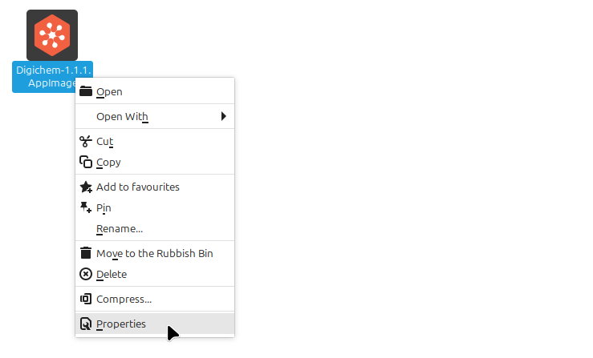
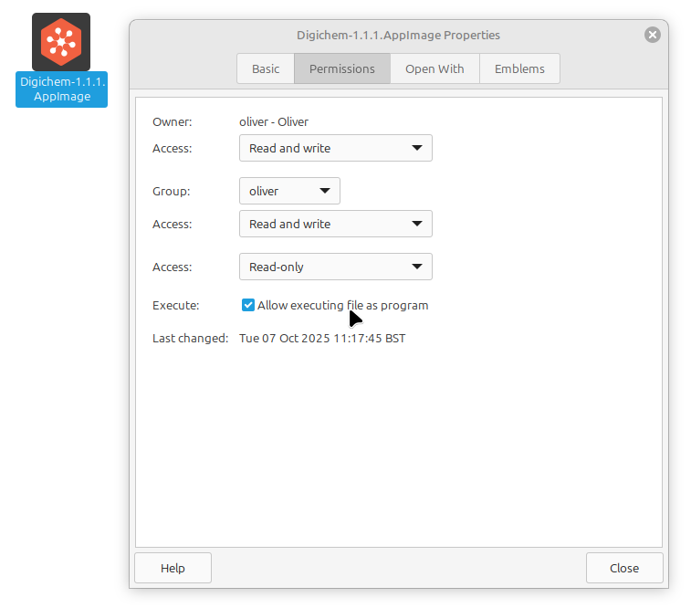

Install the GUI#
Your Digichem download contains everything that you need to setup and run the program. The installation process is simple, but differs slightly depending on your operating system:
Windows#
The Windows installer is a normal .exe program. Simply run the downloaded file to launch the installer, and the program will do the rest!
Mac OS#
The Mac OS download is an archived executable bundle. Once you have downloaded the program, simply:
Double click on the downloaded .zip file to unpack it.
This will create a Digichem.app file in the same place as your downloaded archive.
Double click the Digichem.app file to launch the program.
Digichem.app Is Damaged and Can’t Be Opened. You Should Move It To The Trash#
Some modern version of MacOS display this error message when you try and run a program that was not downloaded from the App store. This error message is misleading because the bundled application is not damaged at all, but fortunately it is easy to circumvent:
First, open a new Terminal window in the location where you download Digichem (which is probably your Downloads folder)
Next, run this command to fix the Mac program detection:
xattr -dr com.apple.quarantine Digichem.appThat’s it! You can now run the program as normal.
Linux#
The Linux executable is currently distributed as an AppImage which contains all of its own dependencies.
The AppImage doesn’t need to be installed to be run. However, you will need to set the executable flag on the AppImage so your operating system knows to run it. You can do this on the command line:
Or by right-clicking the file and selecting Properties:
And ticking the Allow executing file as program option:
